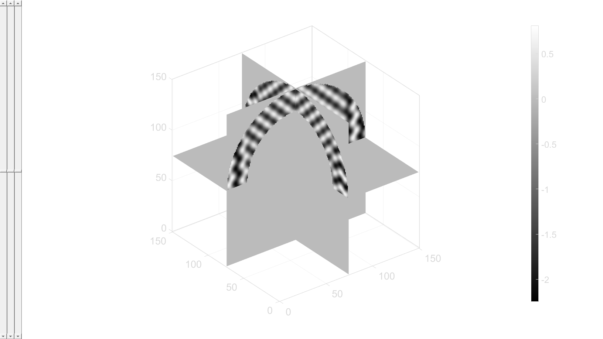
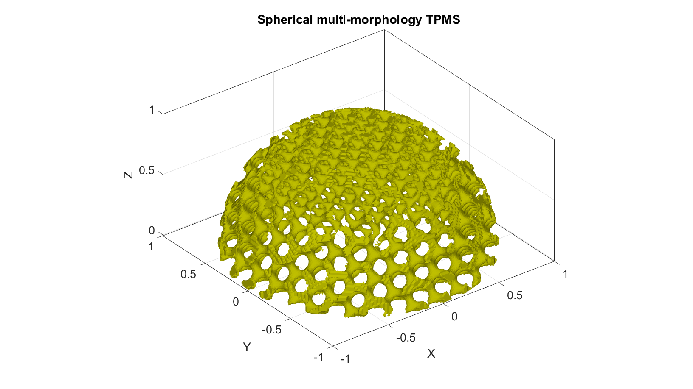

DEMO_0007_Multi_Morph_Spherical_Coordinates
This is a demo for:
- Building geometry for multi-morphology TPMS structures (gyroid and diamond) in spherical coordinates, with transition in different directions.
This example contains # Case-1: TPMS in spherical coordinates, cylindrical transition. # Case-2: TPMS in spherical coordinates, spherical transition. # Case-3: TPMS in spherical coordinates, linear transition.
Contents
Name
License: to license Author: Mahtab Vafaee, mahtab.vafaee@gmail.com
Change log: 2023/11/15 MV Created 2024/02/2 MV Added cases 1-3 ----------------------------------------------------------------------
clear; close all; clc;
Plot settings
fontSize=20; faceAlpha1=0.8; markerSize=10; lineWidth1=3; lineWidth2=4; markerSize1=25;
Control parameters
res=150; %Resolution R=1; %Outter radius r=0.5; % Inner radius (for spherical shape r=0) tranR=0.7; %Transition radius transType= 1; % 1:cylindrical, 2: spherical, 3:linear
Setting-up input parameters for individual lattices
inputStruct_A.L=[2 2 2]; % characteristic length inputStruct_A.Ns=res; % number of sampling points inputStruct_A.isocap=1; %Option to cap the isosurface inputStruct_A.surfaceCase='g'; %Surface type inputStruct_B = inputStruct_A; % Set parameters for individual gyroid inputStruct_A.numPeriods=[10 10 10]; %Number of periods in each direction inputStruct_A.levelset=0.75; %Isosurface level inputStruct_A.gradiantF=0; %Gradiant Factor levelset_A=inputStruct_A.levelset; inputStruct_B.numPeriods=[10 10 10]; inputStruct_B.levelset=0.6; inputStruct_B.gradiantF=0 ; %Gradiant Factor levelset_B=inputStruct_B.levelset; inputStruct_B.surfaceCase='d';
Compute individual gyroids
[~,~,~,S_A,X,Y,Z]=SphericalTPMS (inputStruct_A); [~,~,~,S_B,~,~,~]=SphericalTPMS (inputStruct_B);
Transition lengthScale and shape
kappa controls the lengthscale of transition between TPMS Higher kappa => faster transition Lower kappa => slower transition G controls the shape of transition between TPMS
switch transType case 1 % Figure-7(a) % Cylindrical transition boundary across x-axis G=X.^2 + Y.^2 -(tranR^2); kappa = 20; case 2 % Figure-7(b) % Spherical transition boundary across x-axis G=X.^2 + Y.^2 + Z.^2 -(tranR^2); kappa = 15; case 3 % Figure-7(c) % linear transition boundary across x-axis G = X; G = G/max(G(:)); % G = G-(max(G(:))/2); kappa = 20; end
Compute the weitgh functions
weights_A = 1/(1+exp(-kappa * G)); weights_B = (1-weights_A); % Interpolating using the above weights graded_S = weights_A .* (S_A - levelset_A) ... + (1-weights_A).* (S_B - levelset_B);
Trimming the domain to spherical or shell
switch transType case 1 %cylindrical transition % Outter Surface Ind_out=find(((X.^2 + Y.^2 + Z.^2) < R) & ... ( 0 <Z & Z<(sqrt(R^2-(X.^2 + Y.^2))))); % -0.5<Z<Outter Shell % Inner surface Ind_in=find((X.^2 + Y.^2 + Z.^2) < r); case 2 %spherical transition r = 0; % Inner radius (for spherical case r=0) % Outter Surface Ind_out=find(((X.^2 + Y.^2 + Z.^2) < R) & ... ( -0.5 <Z & Z<(sqrt(R^2-(X.^2 + Y.^2))))); % -0.5<Z<Outter Shell % Inner surface Ind_in=find((X.^2 + Y.^2 + Z.^2) < r); case 3 %linear transition % Outter Surface Ind_out=find(((X.^2 + Y.^2 + Z.^2) < R) & ... ( 0 <Z & Z<(sqrt(R^2-(X.^2 + Y.^2))))); % 0<Z<Outter Shell % Inner surface Ind_in=find((X.^2 + Y.^2 + Z.^2) < r); end % Trimm outter and inner points Logic_out= ismember(1:size(X(:)) , Ind_out); Logic_out=reshape(Logic_out,size(X)); Logic_in= ismember(1:size(X(:)) , Ind_in); Logic_in=reshape(Logic_in,size(X)); keepLogic=and(Logic_out, ~Logic_in); Sn=double(keepLogic); Sn(keepLogic)=graded_S(keepLogic); % Visualize trimmed field sv3(Sn);
graded surface
graded_levelset=0; % isosurface over the spherical shell [F,V]=isosurface(X,Y,Z,Sn,graded_levelset); C=zeros(size(F,1),1); % Using grouping to keep only largest group groupOptStruct.outputType='label'; [G,~,groupSize]=tesgroup(F,groupOptStruct); %Group connected faces [~,indKeep]=max(groupSize); %Index of largest group % Keep only largest group F=F(G==indKeep,:); %Trim faces C=C(G==indKeep,:); %Trim color data [F,V]=patchCleanUnused(F,V); %Remove unused nodes
Visualizing geometry
cFigure; hold on; title('Spherical multi-morphology TPMS','FontSize', fontSize) gpatch(F,V,[0.75, 0.75, 0],'none', 1); axisGeom(gca,fontSize); axis on; camlight headlight; drawnow;